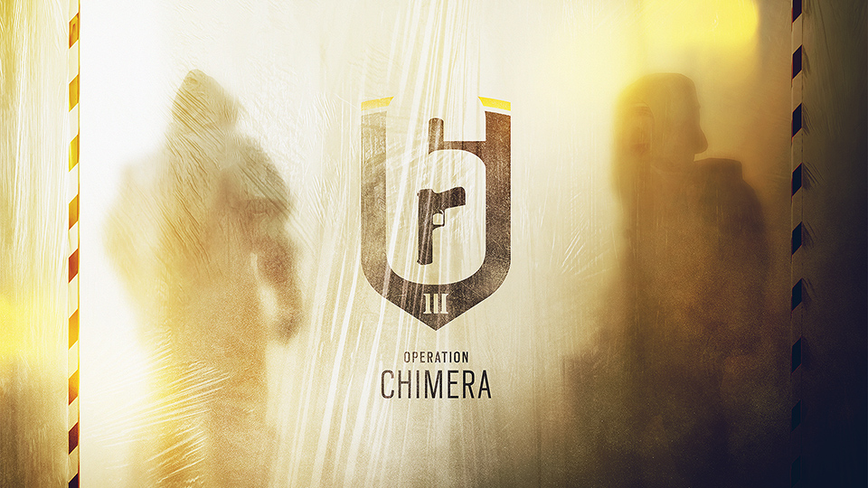

Mint hogy azt eddig is tudtuk az Invitational esemény során kiderül minden a 2 új operátorról és az Outbreak eseményről. Kiderült minden információ az új operátorkról. Azt eddig is tudtuk, hogy egy orosz és egy francia nemzetiségű ember jön, és hogy mind a 2 támadó lesz.
Az egyikőjük Dr. Lera Melnikova másnéven Finka. Az ő gadgetje pár nanobot, amelyek képesek healelni a csapattársakat. Viszont ezek a nanobotok nem csak erre képesek. Képesek feléleszteni az földön fekvő csapattársunkat, gyorsítják a többieket és a segítségkkel könnyebben kezelhető a fegyverek visszarúgása. Finka egy 2 speedes 2 armoros operátor. A fegyverkészletében megtalálható a Spear 308 névre hallgató új AR fegyver, emellett a Spetznaz egységből már ismert SASG-12 automata shotgun (Kapkan és Tachanka fegyvere), valamint a 6P41 lmg (Fuze fegyvere). Másodlagos fegyverként hozhatjuk a GSH-18-at vagy a PMM-et. Ezen kívül breach charge vagy stun granede hozható még vele.
A másik operátor Oliver Flament, akit Lion néven ismerhetünk majd meg. Az ő különleges eszköze egy repülő drón, amely jelzi a csapattársaknak a mozgásban lévő ellenfelek helyzetét. Ez a drón egy körben 3alkalommal használható és vörös körvonallal jelzi a mozgó ellenfeleket. Ugyanúgy, mint Finka, Lion is 2armoral és 2speedel rendelkezik. Az elsődleges fegyverei között megtalálható a V308, a már jól ismert 417 Marksman Rifle (Twitch fegyvere) valamint az SG-CQB shotgun (Doc, Rook és Twitch fegyvere). Mint ahogy azt a GIGN egység operátorainál is megszokhattuk a másodlagos fegyverek között szerepel a P9 pisztoly valamint az LFP586 revolver. Ezzel az operátorral claymore és stun grenade hozható.